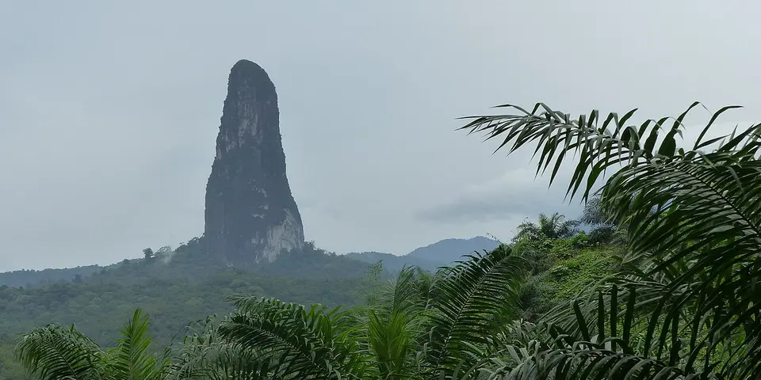

Sub-Saharan Africa
São Tomé and Príncipe on a budget
São Tomé and Príncipe are tiny cocoa islands on the equator, with jungle peaks like Pico Cão Grande, old plantation houses, nesting turtles and empty beaches.
Photo: Philippe Bourachot, CC BY-SA 3.0, via Wikimedia Commons

Classic route
São Tomé, the south coast and Príncipe. 10 days.
Plan a trip to São Tomé and Príncipe
Before you go
Flights to São Tomé Island: Skyscanner · Kiwi.com · Google Flights
Hostels and guesthouses in São Tomé Island · Príncipe · Pico Cão Grande · Ilhéu das Rolas
Tours and tickets: São Tomé Island · Príncipe
Mobile data: São Tomé and Príncipe eSIM
Travel insurance: SafetyWing
How much 8 places in São Tomé and Príncipe cost
Daily budgets per person in US dollars: a hostel dorm or simple guesthouse, local food, local transport and the usual entry fees.
-
São Tomé Island
Explore old cocoa plantations, gaze up at the needle-like Pico Cão Grande and swim at empty palm beaches on the south coast.
Bed $30 · Food $12 · Getting around $6 · Extras $4
Budget tip: Stay in a roça (plantation house) for the history. Many offer simple rooms and meals at fair prices.
$52per day -
Príncipe
A rainforest island with nesting turtles, deserted golden beaches and volcanic peaks rising from the jungle.
Bed $40 · Food $15 · Getting around $8 · Extras $4
Budget tip: Small planes connect the islands, so book early. Turtle nesting season runs roughly from November to February.
$67per day -
Pico Cão Grande
A 300 m volcanic needle rising from the rainforest in the south of São Tomé, one of the island's most striking sights.
Bed $30 · Food $12 · Getting around $10 · Extras $4
Budget tip: Hire a driver for the day and stop at the Monte Café cocoa plantation.
$56per day -
Ilhéu das Rolas
A small island right on the equator, with a marker for the line and quiet palm-fringed beaches.
Bed $40 · Food $15 · Getting around $10 · Extras $5
Budget tip: Take the cheap local boat from Porto Alegre rather than the resort transfer.
$70per day -
Roça Agostinho Neto
Vast former cocoa plantation with a crumbling colonial hospital, workers' quarters and a grand avenue, still home to a living community.
Bed $30 · Food $12 · Getting around $6 · Extras $3
Budget tip: Take a yellow taxi or shared car from the city, tip a resident to show you around, and visit respectfully since families live here.
$51per day -
São João dos Angolares
Southeast coast village with a restored plantation house turned art-filled guesthouse, inventive island cuisine and fishing traditions of the Angolar people.
Bed $30 · Food $12 · Getting around $6 · Extras $4
Budget tip: Shared minibuses from the capital run along the east coast. Book the plantation tasting lunch ahead, or eat grilled fish in village stalls for less.
$52per day -
Praia Jalé
Remote southern beach where green, leatherback and olive ridley turtles nest, with simple eco-bungalows run by a local conservation group.
Bed $30 · Food $12 · Getting around $10 · Extras $8
Budget tip: Visit during the nesting season from November to March for night turtle walks, and support the community by booking their bungalows directly.
$60per day -
Pico de São Tomé
Island's highest summit, a demanding two-day trek from Bom Sucesso through cloud forest full of endemic birds, orchids and giant begonias.
Bed $30 · Food $12 · Getting around $10 · Extras $25
Budget tip: A guide is required inside Obô National Park; arrange one in Bom Sucesso botanical garden. Carry rain gear, as the forest is very wet.
$77per day
Know before you go
São Tomé and Príncipe on a budget: the basics
Currency
$1 = 21.78 STN
São Tomé dobra
| Dollars to STN | STN to dollars | ||
|---|---|---|---|
| $1 | 21.78 STN | 10 STN | $0.459 |
| $5 | 109 STN | 50 STN | $2.30 |
| $10 | 218 STN | 100 STN | $4.59 |
| $20 | 436 STN | 500 STN | $22.96 |
| $50 | 1,089 STN | 1,000 STN | $45.92 |
| $100 | 2,178 STN | 5,000 STN | $230 |
A typical day here (about $67) is roughly 1,500 STN.
Mid-market rate on 2026-10-05. Cash machines and exchange desks pay a little less.
Getting around
Shared yellow taxis and minibuses run along the main roads, and hiring a driver for the south coast saves time. Flights to Príncipe are the reliable link, while boats are irregular. Book flights to Príncipe ahead.
Where to sleep
Guesthouses, simple hotels and converted roças (old plantation estates) are the budget options. Príncipe has fewer cheap beds, so book early.
What to eat
- Calulu: smoked fish stew with greens and palm oil
- Grilled fish: fresh catch with banana or breadfruit
- Chocolate: local cocoa, sold as bars at roças
- Vinho de palma: fresh palm wine
Money
Bring cash in euros, since cards are rarely accepted and ATMs are few. The dobra is pegged to the euro, and tipping is modest.
Phone data
CST and Unitel SIMs are cheap with a passport, and coverage is fair in towns but limited in the south.
Heads up
Malaria is present, so use prevention and repellent.
São Tomé and Príncipe travel: quick answers
How much does a day in São Tomé and Príncipe cost on a budget?
About $67 a day for one person, from $51 in Roça Agostinho Neto to $77 in Pico de São Tomé. That covers a hostel dorm or simple guesthouse, local food, local transport and the usual entry fees, so a week runs about $469 before flights.
When is the best time to visit São Tomé and Príncipe?
June to September is the best time, with the most reliable weather for getting around.
What is the cheapest place to visit in São Tomé and Príncipe?
Roça Agostinho Neto, at about $51 a day. Vast former cocoa plantation with a crumbling colonial hospital, workers' quarters and a grand avenue, still home to a living community.
How long do you need in São Tomé and Príncipe?
São Tomé, the south coast and Príncipe. 10 days.
How much is $1 in São Tomé and Príncipe?
One US dollar is about 21.78 São Tomé dobra (STN), going by the mid-market rate on 2026-10-05. So $20 is roughly 436 STN, and a typical budget day of $67 comes to about 1,500 STN.
How do you get around São Tomé and Príncipe cheaply?
Shared yellow taxis and minibuses run along the main roads, and hiring a driver for the south coast saves time. Flights to Príncipe are the reliable link, while boats are irregular. Book flights to Príncipe ahead.
What food should you try in São Tomé and Príncipe?
Calulu, smoked fish stew with greens and palm oil. Grilled fish, fresh catch with banana or breadfruit. Chocolate, local cocoa, sold as bars at roças. Vinho de palma, fresh palm wine.
Planning around the seasons? See where to go in June, or compare the cheapest countries nearby.
Similar budgets nearby
- Namibia $70/day
- Zimbabwe $64/day
- Mozambique $54/day
- South Africa $52/day